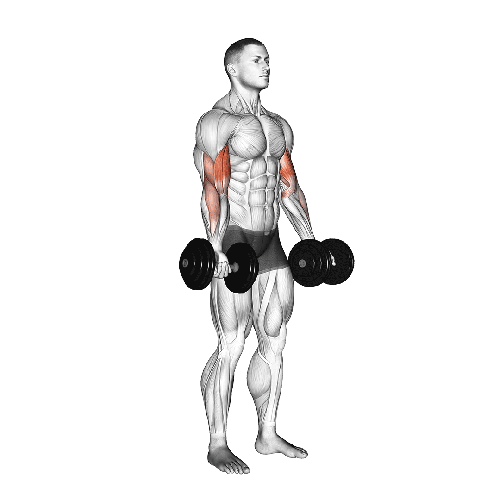

Karizom gyakorlatok
|  |
Bicepsz HajlitásÁllj egyenesen, vállszélességű fogással a egykezes súlyzókon, a tenyerek előre néznek. A teljes mozgás folyamán a felkarod maradjon szorosan törzsed mellett. A mozgás kiinduló pozíciójában a kar egyenes, és a súlyzó keresztben fekszik a combodon. Csak alkart mozgatva hajlítsd be a karodat, és mozgasd a súlyzót felfelé, félkörívben az állad irányába. Lassan ereszd vissza a súlyzót ugyanezen félkörív mentén a kiindulási ponthoz |
|
|---|---|---|
Kalapács BicepszRagadj meg mindkét kezedben egy-egy kézisúlyzót, és tartsd őket a tested mellett, a tenyereid nézzenek a tested irányába. Ha lehet, könyöködet egy helyben tartva, lassan és egyenletesen emeld az egyik súlyzót a válladhoz. Ereszd vissza, és a másik karral is ismételd a mozdulatot. Ügyelj rá, hogy a könyököd ne mozogjon ki oldalra. Végezheted egyszerre a két karoddal is a gyakorlatot. |

|
|
Bicepsz Scott-PadonHelyezkedj el a Scott-pad (bicepsz-pad) mögött kényelmesen (ehhez a gyakorlathoz célszerű, ha van edzőpartner a közelben, hogy segíthessen a súlyt elvenni a gyakorlat végén). Mindkét karoddal egyszerre emeld fel a súlyt addig, míg az alkarod a bicepszedhez nem ér. Lassan engedd vissza a súlyokat, kihasználva a teljes mozgástartományt. |
||
Tricepsznyújtás FekveVedd fel ugyanazt a kiinduló helyzetet, mint a fekvenyomásnál, azonban ennél közeli fogást alkalmazz (15 cm a mutatóujjak között) a kétkezes súlyzórúd közepén. Felkarodat mozdulatlanul tartva, hajlítsd be könyöködet, és mozgasd a súlyzót félkörívben egészen addig, amíg a homlokodhoz nem ér, vagy a fejed felett túl nem megy a padon. Emeld vissza a súlyzót ugyanezen félkörív mentén a kiinduló helyzetbe. |
||
Csigás LetolásKiinduláskor úgy fogd meg a készülék rúdját, hogy kezeid 5-20 cm-re legyenek egymástól. Nyomd le a rudat egészen addig, amíg a karjaid ki nem egyenesednek. Engedd vissza a súlyt, és ismételd meg a mozdulatot. A legtöbben e gyakorlat során a könyöküket szorosan az oldalukhoz szorítják, de néhányan viszont oldalt kinyomják és "belehajolnak" a mozdulatba. Fontos azonban, hogy a könyök mozdulatlan legyen. |
||
Kábeles tricepsznyújtás kötéllelVegyél fel a kábelgépnek háttal döntött törzsű, jól kiegyensúlyozott helyzetet, és fogd meg a gépre erősített tricepsz kötelet. Felsőkarjaid állandó mozdulatlan helyzetére nagyon ügyelve nyújtsd ki az alkarodat. Lassan, rángatás nélkül kezdd el a mozdulatot. Ez a gyakorlat kiválóan edzi a tricepsz külső fejét. |

|
|